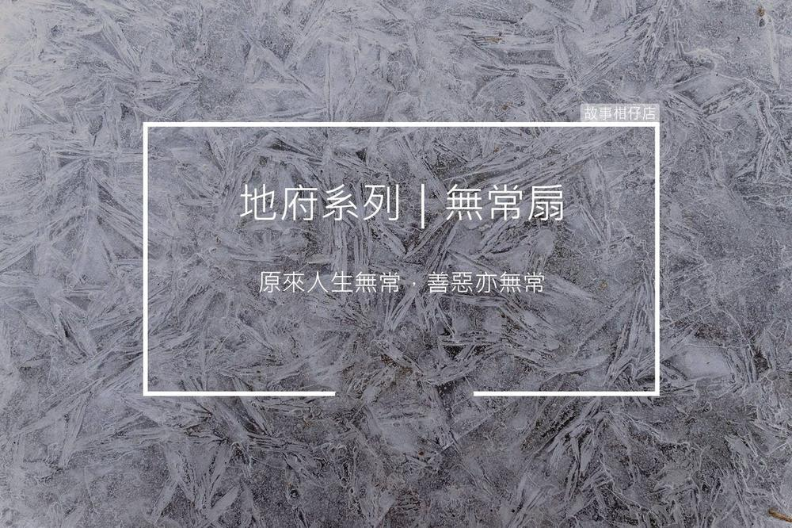

無常扇
2018-07-31

剪溜：您覺得眾多同事、長官或下屬中，誰比較能信賴？
白無常：我的職稱都是「無常」了，你覺得我還會去信賴誰？我告訴你，「無常」才是真理。
〈無常扇〉
「白無常，妳各項考績都是優等，唯獨懲戒惡人一項，為何每個月都無法達標？」
人事會議中，秦廣王當著大夥的面厲聲詰問。白無常低頭不語，只是輕撫手中純白羽扇。
羽扇的每隻羽毛都寫著一名惡人的名字，一扇萬惡，月月更新，只要連續兩百年，將扇中惡名消滅殆盡，就能升官加薪。
首度接過羽扇那年，白無常謹記前輩教誨，唯一目標即是每月逐一拭去扇上惡名。她日日月月追至將死惡人家中，縛其魂魄，先押送至地獄歷經酷刑，再行審判。
白無常鐵面無私，懲奸罰惡，每到月底，她手中羽扇總恢復一襲潔白。大夥都說，白無常肯定能締造最速升官記錄。
那天，她又依羽扇惡名尋至一破落草屋，一進門，只見那剛斷氣的惡人躺在滿是破洞的草席上。旁邊卻有一婦人邊磕頭邊哭著說：「您一路好走，大恩大德來世再報。」
一個惡人，何德何能受得起連三磕頭？
白無常喚出灶神一問，灶神幽幽嘆氣答道：「六年前，他兒子與鄰居小孩去溪邊玩，卻不慎溺水，他連忙跳下救人，鄰居孩子是救上來了，兒子卻溺死了。方才那婦人，便是獲救孩子的母親。」
目睹愛子橫死，妻子挹鬱而亡，男人心若焦土，人也發了瘋。每逢看見與兒子年紀相仿的孩子，便誘綁回家，若孩子不從，便被狠狠屈打。本來忠厚的老實人，一夕成為令人聞風喪膽的惡徒。
原來人生無常，善惡亦無常。
當月底，白無常的羽扇上，第一次留下未除的名字。
一扇萬惡，月月更新，又兩百年過去了，白無常仍習慣讓羽扇留下一名，永無純潔無瑕之時。
您今天，許願了嗎？
故事柑仔店的神明集郵冊，
邀您一起許個願。
★ 更多的引渡人
極短篇：
人物專訪：菜鳥